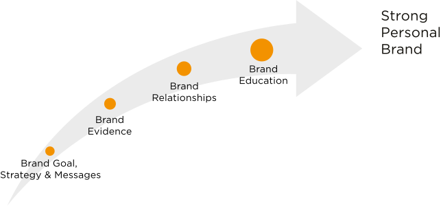
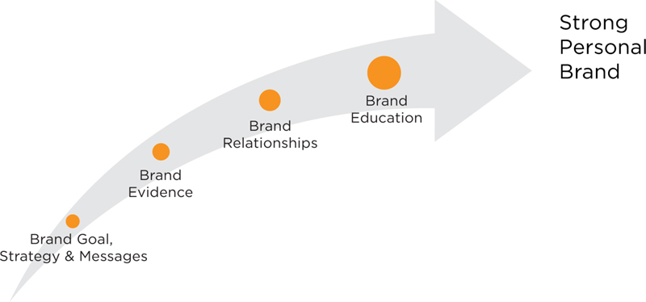

We’ve been on an incredible journey together. We’ve taken you apart and put you back together as a better and reinvented brand. Thank you for being open to new possibilities and new ways to imagine yourself. If nothing else, I hope I have armed you with some 21st-century skills in flexibility, strategic thinking and social networking.
Along the way, we’ve talked about how a strategic approach to brand positioning and communication is critical to building a credible brand. Icing your cake before you bake it is not advisable. When you jump into tactics and make a lot of noise before you figure out your strategy, you can hinder, rather than help, your brand.
Therefore, we have worked on identifying your strategic recipe for a strong brand. It includes both cake and icing in order to be meaningful and memorable. You have followed the five steps in the BrandingPays™ System to develop your:
Figure C.1
The BrandingPays System works. A great example is a personal branding seminar for up-and-coming female executives that I conducted for a Fortune 100 company. Every participant in the 16-person cohort achieved her desired job or promotion at the company within 12 months of graduating from the BrandingPays series of seminars. Some successfully changed careers, and one graduate went from managing a 40-person staff to managing a 300-person staff in a newly created executive role. These women are living their dreams—largely of their own making. The company benefits from a more diverse talent pool of potential executives and more highly motivated leaders. This seminar series was originally conceived for female executives, but the BrandingPays System is gender neutral and works equally well for men and women.
I am reprising the Personal Branding Journey graphic (Fig. C.2) so you can see how far you have come on your way to reinventing your brand.
Figure C.2
The Branding Journey
How far have you come?
 
If you have done the action items listed in the book, you should be well on your way to a better brand.
Personal branding is a skill that will serve you your entire life, whether you follow a straight path or a serendipitous one, as so many of us do. The world is constantly changing, and periodically you will need to rebrand for new opportunities.
I hope that you use BrandingPays: The Five-Step System to Reinvent Your Personal Brand as a reference throughout your life and career. Use the positioning statement template to understand how to message to different audiences. Keep your elevator pitch top of mind so you can take advantage of any opportunity—like Jenna, who got a new job by approaching a CEO in a restaurant. Commit to memory your key brand descriptors from the brand strategy platform. They will help to keep you on brand with your cake and icing. Use the ecosystem model to understand and leverage the influencers as your goals or environments change. And, finally, your action plan is a living document that will help to keep you accountable in both brand improvement and brand communication.
I realize that this book may have you feeling that you’ve just taken a drink from a fire hose. Some of the concepts may feel foreign at first, but with practice the methodology will become easier to master. The clarity that results should give you the confidence to truly brand from the inside out.
You may be starting out and need to create your personal brand, or you may have a brand that you want to reinvent. Whatever your starting point, personal branding will raise your visibility and credibility, and will increase your understanding of your unique value. Whether you are a professional, an entrepreneur or a recent MBA graduate with the goal of a new job, career advancement or business opportunities, personal branding will help you reach your goals.
I want to end this book with some stories about overcoming life and personal branding challenges. I hope you find them as inspiring as I did.
I’ve enjoyed leading you on this branding journey, and hope that you feel empowered to take charge of your brand.